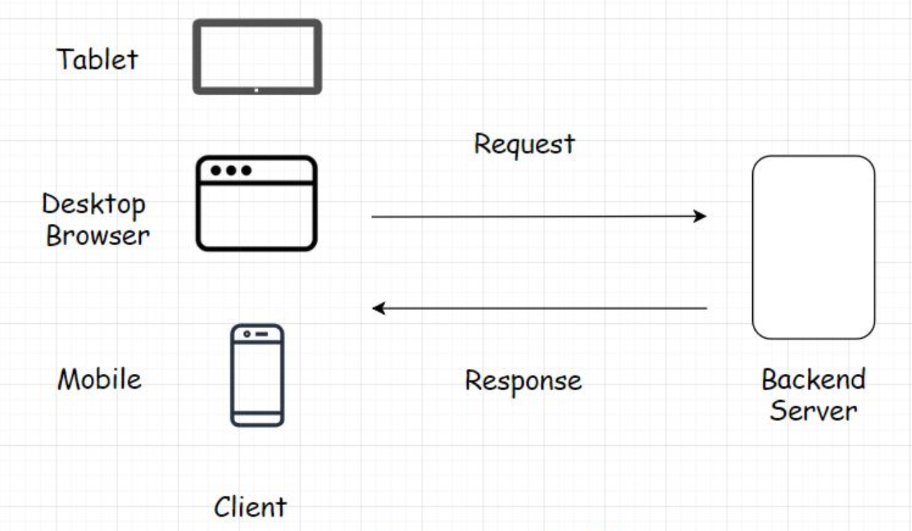

Client-server architecture is the fundamental building block of the web.
Foundation of how computers speak to one another
The architecture works on a request-response model. The client sends the request to the server for information and the server responds with it. Every website you browse, is built on the client-server architecture. A very small percent of the business websites and applications use the peer-to-peer architecture, which is different from the client-server.
The client is any tool that acts on behalf of the user. It can be a mobile app, a desktop or a tablet like an iPad. It can also be a web-based console, running commands to interact with the backend server. The client holds our user interface. The user interface is the presentation part of the application. It's written in HTML, CSS, JavaScript and is responsible for the look and feel of the application.
Thin client - client that holds just the user interface of the application. It has no business logic of any sort. For every action, the client sends a request to the backend server.It receives the requests from the client and provide the response after executing the business logic based on the request parameters received from the client.